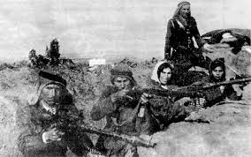
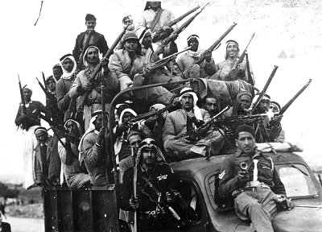
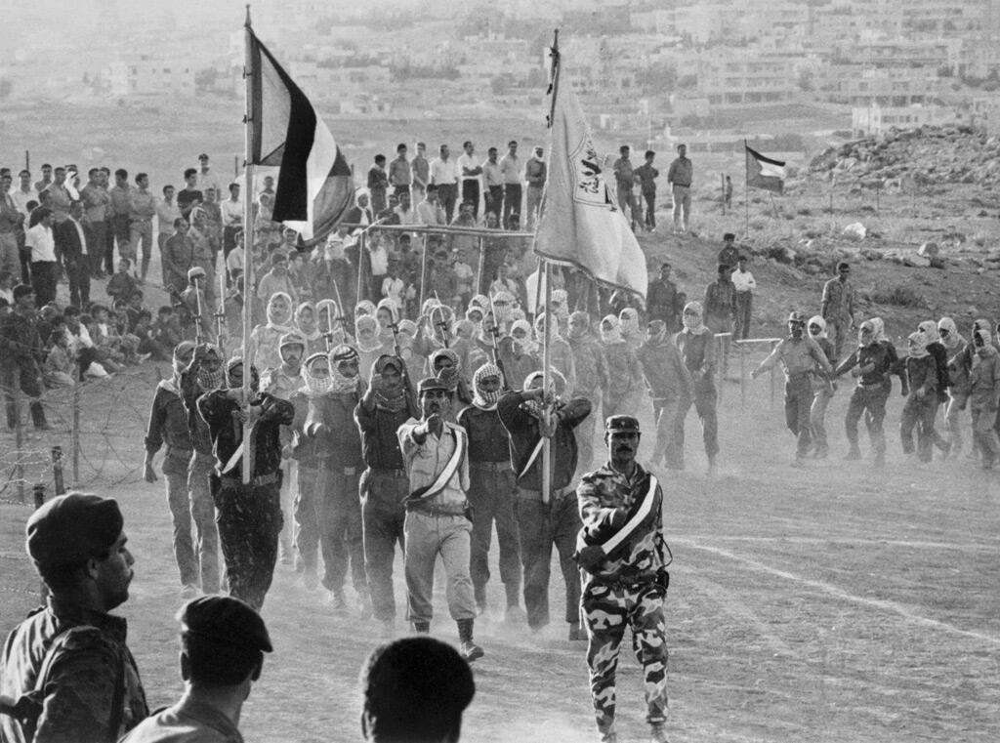

الثورة العربية في فلسطين 1936-1939
الثورة العربية في فلسطين 1936-1939، عُرفت لاحقًا بـ «الثورة الكبرى»، هي انتفاضة وطنية قام بها العرب الفلسطينيون في فلسطين الانتدابية ضد الإدارة البريطانية للولاية الفلسطينية، والمطالبة بالاستقلال، وإنهاء سياسة الهجرة اليهودية المفتوحة، وشراء الأراضي، والهدف المعلن المتمثل في إنشاء «بيت وطني يهودي»، وقد اندلعت شرارتها عقب قيام الفلسطينيين بقتل اثنين من اليهود وإصابة ثالث خلال هجوم على مركبتهم في طولكرم بتاريخ 15 أبريل 1936. تأثرت المعارضة مباشرة بالتمرد القسامي، بعد مقتل الشيخ عز الدين القسام في عام 1935، وكذلك إعلان الحاج أمين الحسيني 16 مايو 1936 باعتباره «يوم فلسطين» ودعوته إلى إضراب عام. وصف الكثيرون في اليشوب اليهودي الثورة بأنها «غير أخلاقية وإرهابية»، وغالبا ما قارنتها بالفاشية والنازية. غير أن بن غوريون وصف الأسباب العربية بأنها تخشى من تنامي السلطة الاقتصادية اليهودية، ومعارضة الهجرة الجماعية اليهودية، والخوف من التماهي الإنجليزي مع الصهيونية. استمر الإضراب العام في الفترة من أبريل إلى أكتوبر 1936، مما أدى إلى اندلاع الثورة العنيفة. وتكونت الثورة من مرحلتين متميزتين. كانت المرحلة الأولى موجهة في المقام الأول من قبل اللجنة العربية العليا الحضرية والنخبوية، وكانت تركز بشكل رئيسي على الإضرابات وغيرها من أشكال الاحتجاج السياسي. بحلول أكتوبر 1936، هزمت الإدارة المدنية البريطانية هذه المرحلة باستخدام مزيج من التنازلات السياسية والدبلوماسية الدولية (التي تشمل حكام العراق والسعودية وإمارة شرق الأردن الذاتية الحكم والمملكة المتوكلية اليمنية) والتهديد بالقانون العرفي. أما المرحلة الثانية، التي بدأت في أواخر عام 1937، فهي حركة مقاومة عنيفة بقيادة الفلاحين أثارها القمع البريطاني في عام 1936 والتي استهدفت القوات البريطانية بشكل متزايد. وخلال هذه المرحلة، قمع الجيش البريطاني وقوة شرطة فلسطين حركة التمرد بوحشية باستخدام تدابير قمعية كان الغرض منها تخويف السكان العرب وتقويض الدعم الشعبي للثورة. وخلال هذه المرحلة، قامت عشيرة النشاشيبي بدور أكثر هيمنة على الجانب العربي، التي انسحب حزبها الدفاع الوطني بسرعة من اللجنة العليا العربية المتمردة، بقيادة الفصيل الراديكالي لأمين الحسيني، وبدلا من ذلك وقفت إلى جانب البريطانيين – بإرسال فصائل السلام بالتنسيق مع الجيش البريطاني ضد وحدات الفصائل العربية القومية والجهادية. وفقا للأرقام الرسمية البريطانية التي تغطي الثورة بأكملها، قتل الجيش والشرطة أكثر من 2,000 من العرب في القتال، وشنق 108 منهم، وقتل 961 شخصا بسبب ما وصفوه بأنه «أنشطة العصابات والأنشطة الإرهابية». وفي تحليل للإحصاءات البريطانية، يقدر وليد الخالدي 19,792 إصابة للعرب، يبلغ عدد القتلى فيها 5,032 قتيلا: 3,832 قتيلا على أيدي البريطانيين و1،200 قتيلا بسبب «الإرهاب»، و14،760 جريحا. أكثر من عشرة في المائة من السكان العرب الفلسطينيين الذكور البالغين بين 20 و60 عاما قُتلوا أو جُرحوا أو سجنوا أو نفيوا. تتراوح تقديرات عدد اليهود الفلسطينيين الذين قتلوا من 91 إلى عدة مئات. فشلت الثورة العربية في فلسطين الانتدابية، وأثرت عواقبها على نتيجة حرب فلسطين عام 1948. وتسببت في قيام الانتداب البريطاني بتقديم دعم حاسم للميليشيات الصهيونية السابقة للدولة مثل الهاغانا، في حين أجبرت الثورة فرار الزعيم العربي الفلسطيني الرئيسي في تلك الفترة، المفتي الكبير في القدس – الحاج أمين الحسيني إلى المنفى.
حرب 1948
الحرب العربية الإسرائيلية عام 1948 وتسمى أيضا بحرب النكبة واختصارا حرب 1948 هي أولى الحروب العربية الإسرائيلية، حدثت عقب إنهاء الانتداب البريطاني على فلسطين وإعلان قيام إسرائيل. نشبت الحرب على أرض فلسطين بين كل من المملكة الأردنية الهاشمية والمملكة المصرية ومملكة العراق وسوريا ولبنان والمملكة العربية السعودية ضد المليشيات الصهيونية المسلحة في فلسطين والتي تشكّلت من البلماخ والإرجون والهاجاناه والشتيرن والمتطوعين اليهود من خارج حدود الانتداب البريطاني على فلسطين. أودت الحرب بحياة آلاف الجنود من الطرفين، وانتهت بهزيمة العرب، فأطلقوا عليها حرب النكبة. كانت المملكة المتحدة قد أعلنت إنهاء انتدابها على فلسطين وغادرت تبعا لذلك القوات البريطانية من منطقة الانتداب، وأصدرت الأمم المتحدة قرارا بتقسيم فلسطين لدولتين يهودية وعربية الأمر الذي عارضته الدول العربية وشنّت هجوما عسكريا لطرد المليشيات اليهودية من فلسطين في مايو 1948 استمر حتى مارس 1949. خلال الحرب، خططت بريطانيا سرًا لغزو أردني كامل للضفة الغربية على أمل القضاء على إمكانية إنشاء دولة فلسطينية بقيادة أمين الحسيني، والتي كانت ناجحة وأمنت النفوذ البريطاني داخل شرق الأردن على الرغم من أن دورهم قد خلق نتيجة غير مرغوب فيها في مستقبل الشرق الأوسط. في اليوم التالي لاعتماد خطة الأمم المتحدة لتقسيم فلسطين في 29 نوفمبر 1947 وهي خطة تهدف إلى تقسيم فلسطين إلى دولة عربية ودولة يهودية ونظام دولي خاص يغطي القدس وبيت لحم قُتل سبعة يهود في هجمات حافلات فجة من قبل مسلحين عرب في حادثة تعتبر الأولى في الحرب الأهلية. جاء هذا الهجوم انتقامًا لاغتيال خمسة أفراد من عائلة عربية على يد جماعة شتيرن يشتبه في أنهم مخبرين بريطانيين. كان هناك توتر وصراع بين العرب واليهود والبريطانيين منذ وعد بلفور عام 1917 وإنشاء الانتداب البريطاني على فلسطين عام 1920. لم تكن السياسات البريطانية مرضية للعرب واليهود على حد سواء. تطورت المعارضة العربية إلى الثورة العربية 1936-1939 في فلسطين، بينما تطورت المعارضة اليهودية إلى التمرد اليهودي 1944-1947 في فلسطين. في 15 مايو 1948، تحولت الحرب الأهلية إلى صراع بين إسرائيل والدول العربية بعد إعلان استقلال إسرائيل في اليوم السابق. دخلت مصر وشرق الأردن وسوريا وقوات التدخل السريع من العراق إلى فلسطين. سيطرت القوات العربية على المناطق العربية وهاجمت على الفور القوات الإسرائيلية والعديد من المستوطنات اليهودية. دار القتال الذي دام عشرة أشهر في الغالب في أراضي الانتداب البريطاني وفي شبه جزيرة سيناء وجنوب لبنان، وتخللته عدة فترات هدنة. سيطرت إسرائيل كنتيجة للحرب على المنطقة التي اقترحتها الأمم المتحدة للدولة اليهودية، بالإضافة إلى ما يقرب من 60% من المساحة المقترحة للدولة العربية، والتي شملت مناطق مثل يافا واللد والرملة والجليل الأعلى وأجزاء من النقب وشريط كبير على طول طريق تل أبيب-القدس. سيطرت إسرائيل أيضًا على القدس الغربية، التي كان من المفترض أن تكون جزءًا من المنطقة الدولية للقدس وضواحيها. سيطر شرق الأردن على القدس الشرقية وما أصبح يعرف بالضفة الغربية وضمها في العام التالي، وسيطر الجيش المصري على قطاع غزة. في مؤتمر أريحا في 1 ديسمبر 1948، دعا 2000 مندوب فلسطيني إلى توحيد فلسطين وشرق الأردن كخطوة نحو الوحدة العربية الكاملة. أدى هذا الصراع إلى تغير ديموغرافي كبير في جميع أنحاء الشرق الأوسط. وقد فر أو طُرد حوالي 700 ألف عربي فلسطيني من منازلهم في المنطقة التي سيطرت عليها إسرائيل وأصبحوا لاجئين فلسطينيين، وهي الفترة التي يشيرون إليها باسم النكبة. انتقل عدد مماثل من اليهود إلى إسرائيل خلال السنوات الثلاث التي تلت الحرب، بما في ذلك 260 ألفًا من الدول العربية المحيطة.
أيلول الأسود (1970–71)
أيلول الأسود ويعرف أيضاً باسم الحرب الأهلية الأردنية، هو الصراع الذي نشب في الأردن بين القوات المسلحة الأردنية بقيادة الملك حسين ومنظمة التحرير الفلسطينية بقيادة ياسر عرفات في المقام الأول بين 16 و27 سبتمبر 1970 مع استمرار بعض الأعمال حتى 17 يوليو 1971. بعد أن فقد الأردن السيطرة على الضفة الغربية لإسرائيل عام 1967، نقل الفدائيون الفلسطينيون قواعدهم إلى الأردن وصعَّدوا هجماتهم على إسرائيل والأراضي المحتلة. تطور رد انتقامي إسرائيلي على معسكر لمنظمة التحرير في الكرامة وهي بلدة أردنية على طول الحدود مع الضفة الغربية إلى معركة واسعة النطاق. أدى الانتصار الفلسطيني الأردني المشترك في معركة الكرامة في عام 1968 إلى زيادة الدعم العربي للمقاتلين الفلسطينيين في الأردن. نمت قوة منظمة التحرير في الأردن، وبحلول عام 1970، بدأت علنا المطالبة بالإطاحة بالملكية الهاشمية. مع عملها كدولة داخل الدولة تجاهل بعض الفدائيين القوانين واللوائح المحلية، وحاولوا اغتيال الملك حسين مرتين — مما أدى إلى مواجهات عنيفة بينها وبين الجيش الأردني في يونيو 1970. الملك حسين أراد الإطاحة بالفدائيين من البلد، ولكنه تردد في الهجوم لأنه لم يكن يريد أن يستخدم أعداءه ذلك ضده بمساواة المقاتلين الفلسطينيين بالمدنيين. تصرفات منظمة التحرير في الأردن توجت بحادث اختطاف الطائرات في ميدان داوسون في 10 سبتمبر، التي اختطف فيها الفدائيون ثلاث طائرات مدنية وأجبروها على الهبوط في الزرقاء، وأخذوا مواطنين أجانب كرهائن، وقاموا في وقت لاحق بنسف الطائرات أمام الصحافة الدولية. رأى الملك حسين أن هذه هي القشة الأخيرة، وأمر الجيش بالتحرك. في 17 سبتمبر حاصر الجيش الأردني المدن التي تتواجد بها منظمة التحرير بما في ذلك عمان وإربد وبدأ قصف الفدائيين الذين تمركزوا في مخيمات اللاجئين الفلسطينيين بالمدفعية الثقيلة ومدفعية الدبابات. في اليوم التالي، بدأت قوة من سوريا مع علامات جيش التحرير الفلسطيني يتقدمون صوب إربد التي أعلنها الفدائيون «مدينة محررة». في 22 سبتمبر انسحب السوريون بعد شن الجيش الأردني الهجوم الأرضي الذي ألحق خسائر فادحة بالقوة السورية. قاد الضغط المتصاعد الذي قامت به البلدان العربية الملك حسين إلى وقف القتال. في 13 أكتوبر وقع اتفاق مع ياسر عرفات لتنظيم وجود الفدائيين. عاد الجيش الأردني وهاجم مرة أخرى في يناير/ 1971. تم طرد الفدائيين من المدن الواحدة تلو الأخرى، حتى استسلم 2,000 من الفدائيين بعد محاصرتهم في غابة قرب عجلون يوم 17 يوليو، وكان ذلك إيذانا بانتهاء الصراع. سمح الأردن للفدائيين بالتوجه إلى لبنان عبر سوريا وبعدها أصبحوا أحد الأطراف المحاربة في الحرب الأهلية اللبنانية. تأسست منظمة أيلول الأسود أثناء النزاع لتنفيذ عمليات انتقامية. وأعلنت المنظمة مسؤوليتها عن اغتيال رئيس الوزراء الأردني وصفي التل في عام 1971، وعملية ميونيخ التي حظيت بتغطية إعلامية واسعة في عام 1972.
